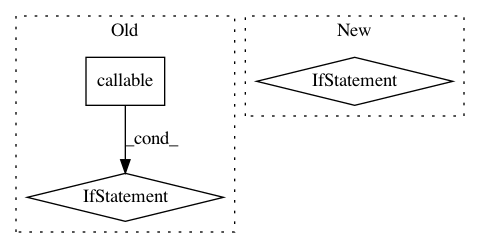

1dc67f374cde47a721e5fe5d9237bc2573bda2f0,keras/backend/cntk_backend.py,,in_train_phase,#Any#Any#Any#,66
Before Change
uses_learning_phase = False
if training is 1.0 or training:
if callable(x) and not isinstance(x, C.cntk_py.Function):
return x()
else:
return x
elif training is 0.0 or training is False:
if callable(alt) and not isinstance(x, C.cntk_py.Function):
return alt()
else:
After Change
if callable(alt) and isinstance(alt, C.cntk_py.Function) is False:
alt = alt()
if training is True:
x._uses_learning_phase = uses_learning_phase
return x
else:
result = C.element_select(training, x, alt)
result._uses_learning_phase = uses_learning_phase
return result
def in_test_phase(x, alt):
global _LEARNING_PHASE
// Similiar as in_train_phase, use element_select as workaround.
if callable(x) and isinstance(x, C.cntk_py.Function) is False:
In pattern: SUPERPATTERN
Frequency: 4
Non-data size: 3
Instances
Project Name: keras-team/keras
Commit Name: 1dc67f374cde47a721e5fe5d9237bc2573bda2f0
Time: 2017-07-06
Author: souptc@gmail.com
File Name: keras/backend/cntk_backend.py
Class Name:
Method Name: in_train_phase
Project Name: deepmipt/DeepPavlov
Commit Name: 286a864220a00732d382a75051e11877acf13c3f
Time: 2018-01-24
Author: ol.gure@gmail.com
File Name: deeppavlov/models/tokenizers/nltk_tokenizer.py
Class Name: NLTKTokenizer
Method Name: __init__
Project Name: ray-project/ray
Commit Name: 415be78cc0d1275a29d0ceda550d0d7a7a5224ea
Time: 2020-09-08
Author: amogkam@users.noreply.github.com
File Name: python/ray/util/sgd/torch/torch_trainer.py
Class Name: TorchTrainer
Method Name: __init__
Project Name: deepmipt/DeepPavlov
Commit Name: 8e0dea3d8fa8efecc9b3eaff721f997e08e74e57
Time: 2018-02-25
Author: yoptar@gmail.com
File Name: deeppavlov/core/commands/train.py
Class Name:
Method Name: train_model_from_config